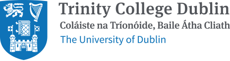
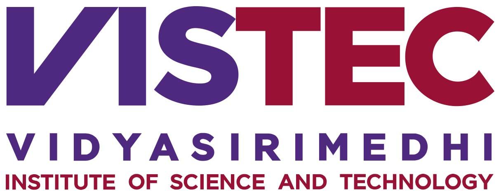

SyntaGen - Harnessing Generative Models for Synthetic Visual Datasets
CVPR 2024 Workshop
June 17th, Morning
Seattle, United States
The field of computer vision has undergone a significant transformation in recent years with the advancement of generative models, particularly text-to-image models such as Imagen, Stable Diffusion, and DALLE-3. These models have enabled the creation of synthetic visual datasets that are highly realistic and diverse, complete with annotations and rich variations. These datasets have proven to be extremely valuable in training and evaluating various computer vision algorithms, including object detection and segmentation, representation learning, and scene understanding. The SyntaGen workshop will act as a crucible for an inclusive exchange of ideas, practical insights, and collaborative explorations. By convening experts and enthusiasts from various corners of the field, it strives to propel the development of generative models and synthetic visual datasets to new heights. Through informative talks, challenges, poster sessions, paper presentations, and vibrant panel discussions, this workshop endeavors to lay the foundation for innovative breakthroughs that bridge the realms of generative models and computer vision applications.
Speakers
| David J Fleet Professor University of Toronto, Google DeepMind |
Phillip Isola Associate Professor MIT |
Jia-Bin Huang Associate Professor University of Maryland College Park |
Tali Dekel Assistant Professor Weizmann Institute of Science |
Nathan Carr Adobe Fellow Adobe Research |
Panelists
- TBD
Schedule
| Time | Event | Duration | Speaker |
|---|---|---|---|
| 8:25 | Introduction (Gift giveaway) | 5 mins | TBD |
| 8:30 | Competition session & Winners talks & Oral presentation | 30 mins | TBD |
| 9:00 | Invited talk 1 | 25 mins | TBD |
| 9:25 | Invited talk 2 | 25 mins | TBD |
| 9:50 | Break (Gift giveaway) | 10 mins | TBD |
| 10:00 | Invited talk 3 | 25 mins | TBD |
| 10:25 | Invited talk 4 | 25 mins | TBD |
| 10:50 | Invited talk 5 | 25 mins | TBD |
| 11:15 | Panel discussion | 25 mins | TBD |
| 11:40 | Poster Session | 40 mins | TBD |
Accepted Papers
[Oral] Is Synthetic Data all We Need? Benchmarking the Robustness of Models Trained with Synthetic Images. Krishnakant Singh, Thanush Navaratnam, Jannik Holmer, Simone Schaub-Meyer
[Oral] Intrinsic LoRA: A Generalist Approach for Discovering Knowledge in Generative Models. Xiaodan Du, Nicholas Kolkin, Greg Shakhnarovich, Anand Bhattad
ScribbleGen: Generative Data Augmentation Improves Scribble-supervised Semantic Segmentation. Jacob Schnell, Jieke Wang, Lu Qi, Vincent Tao Hu, Meng Tang
Diffusion Models for Open-Vocabulary Segmentation. Laurynas Karazija, Iro Laina, Andrea Vedaldi, Christian Rupprecht
RePoseDM: Recurrent Pose Alignment and Gradient Guidance for Pose Guided Image Synthesis. Anant Khandelwal
CinePile: A Long Video Question Answering Dataset and Benchmark. Ruchit Rawal, Khalid Saifullah, Ronen Basri, David Jacobs, Gowthami Somepalli, Tom Goldstein
Data Augmentation for Facial Recognition with Diffusion Model. Zhiqi Huang, Hao Geng, Haoyu Wang, Huixin Xiong, Zhiheng Li
Call for Papers
We invite papers to propel the development of generative models and/or the use of their synthetic visual datasets for training and evaluating computer vision models. Accepted papers will be presented in the poster session in our workshop. We welcome submissions along two tracks:
- Full papers: Up to 8 pages, excluding references, with option for inclusion in the proceedings.
- Short papers: Up to 4 pages, excluding references, not for the proceedings.
Only full papers will be considered for the Best Paper award. Additionally, we offer a Best Paper and a Best Paper Runner-up award with oral presentations. All accepted papers without inclusion in the proceedings are non-archival.
Topics
The main objective of the SyntaGen workshop is to offer a space for researchers, practitioners, and enthusiasts to investigate, converse, and cooperate on the development, use, and potential uses of synthetic visual datasets made from generative models. The workshop will cover various topics, including but not restricted to:
- Leveraging pre-trained generative models to generate data and annotations for perception-driven tasks, including image classification, object detection, semantic and instance segmentation, relationship detection, action recognition, object tracking, and 3D shape reconstruction and recognition.
- Extending the generative capacity of large-scale pre-trained text-to-image models to other domains, such as videos and 3D spaces.
- Synergizing expansive synthetic datasets with minimally annotated real datasets to enhance model performance across scenarios including unsupervised, semi-supervised, weakly-supervised, and zero-shot/few-shot learning.
- Exploring generative model learning from small-scale datasets, paving the way for effective data generation when faced with limited training data.
- Enhancing data quality and improving synthesis methodologies in the context of pre-trained text-to-image (T2I), text-to-video (T2V), and text-to-3D models.
- Evaluating the quality and effectiveness of the generated datasets, particularly on metrics, challenges, and open problems related to benchmarking synthetic visual datasets.
- Ethical implications of using synthetic annotated data, strategies for mitigating biases, and ensuring responsible data generation and annotation practices.
Submission Instructions
Submissions should be anonymized and formatted using the CVPR 2024 template and uploaded as a single PDF.
Supplementary material
Supplemental materials optionally can be submitted along the paper manuscript on the submission deadline. They must be anonymized and uploaded either as a single PDF or a ZIP file.
Submission link
Important workshop dates
- Submission deadline: March 22nd, 11:59 PM Pacific Time
- Notification of acceptance: April 7th, 11:59 PM Pacific Time
- Camera Ready submission deadline: April 14th, 11:59 PM Pacific Time
- Workshop date: June 17th, 2024 (Morning)
Contact us
If you have any further questions, please feel free to contact us at cvpr24syntagen@googlegroups.com
SyntaGen Competition Results
1st Place ($1,000): Team Teddy Bear from HCMC University of Science, Vietnam - mIoU: 51.61
2nd Place ($500): Team HNU-VPAI from Hunan University, China - mIoU: 47.36
SyntaGen Competition
Dataset and metric
The primary objective of this competition is to drive innovation in the creation of high-quality synthetic datasets, leveraging only the pretrained Stable Diffusion and the 20 class names from PASCAL VOC 2012 for semantic segmentation. The evaluation of synthetic dataset quality involves training a DeepLabv3 model on the synthetic dataset and subsequently assessing its performance on a private test set on the task of semantic segmentation (a sample validation set is the validation set of PASCAL VOC 2012). Submissions are ranked based on the mIoU metric. This competition framework mirrors the practical application of synthetic datasets, particularly in scenarios where they replace real datasets.
Requirements
Teams are required to upload their synthetic datasets to Google Drive for public access. The dataset should include a maximum of 10K pairs of synthesized images and semantic segmentations, each image being 512x512 in size. We will supply a Google Colab codebase for exemplifying some random training images and their annotations, DeepLabv3 training and evaluation, using a Resnet-50 backbone, and showing qualitative results. Training and evaluation time for DeepLabv3 is capped at 10K iterations with a batch size of 8. The codebase should remain unchanged except for the Google Drive file ID provided by each team. For text prompts, participants can leverage various methods, including LLMs like ChatGPT. For text-to-image generation, participants can choose either Stable Diffusion (v1.x) or (v2.x). However, participants cannot use any additional segmentation datasets. One approach can be Dataset Diffusion, and the source code for which is accessible at Github.
Submission and evaluation
The submission comprises two phases with two separate deadlines, outlined as follows:
- Random seed + DeepLabv3 + Dataset. By the first deadline in this phase, each
team must use their method to generate their synthetic dataset and train a DeepLabv3 on
it. Each team must submit:
- The random seed used in their model for dataset generation,
- The generated dataset
- The checksum of the trained DeepLabv3. The checksum code will be provided as part of the Colab codebase. Modifications to the model, the trained DeepLabv3, or the generated dataset are prohibited after this deadline.
- Code + Score. After the first deadline, our private test set will be released to each team. Each team must evaluate their trained DeepLabv3 on the test set and submit their code and mIoU score on the same Colab file as in the previous deadline by the final deadline.
Entries will be evaluated based on their mIoU, and the top submissions will be contacted for further verification. These selected participants will be required to share their code (via GitHub) to replicate the synthetic datasets (consisting of images and annotations) using the specified random seed and checksum. Additionally, the provided Google Colab file will be employed to reproduce both the training and inference processes of DeepLabv3, ensuring accurate results and confirming adherence to Stable Diffusion as the exclusive text-to-image generator. Any submissions found to be non-compliant or in violation of the rules will be disqualified. In such instances, the evaluation process will continue with the subsequent submissions until the final top 2 are determined
Submission Form:
Google Colab file training and evaluating synthetic dataset
Please use this Google Colab file for training and evaluating your synthetic dataset.
Note: You can run it in Google Colab or download it as a Jupyter notebook to run on your local machine (advised).
Prizes and presentation:
We will award the top 2 teams with cash prizes (Rank 1: $1000, Rank 2: $500) and invite them to write a report and present their work at the workshop (10 minutes each).
Important Dates
- Competition announcement: Feb 22nd, 2024
- Submission start: Mar 1st, 2024
- Submission deadline 1 for random seed, DeepLabv3, and dataset: May 24th, 2024. 11:59 pm PDT,
- Submission deadline 2 for dataset generation code and mIoU score: May 27th, 2024. 11:59 pm PDT
- Award announcement: Jun 7th, 2024
- Report and code upload for winners: Jun 14th, 2024
Discussion community
Let’s join SyntaGen’s community in Discord to discuss anything related to the challenge
Workshop Sponsors
| VinAI | Adobe |
Organizers

|
||||
| Khoi Nguyen VinAI Research, Vietnam |
Anh Tuan Tran VinAI Research, Vietnam |
Binh Son Hua Trinity College Dublin, Ireland |
Supasorn Suwajanakorn VISTEC, Thailand |
Yi Zhou Adobe |
Volunteers
| Truong Vu Research Resident VinAI Research, Vietnam |
Quang Nguyen Research Intern VinAI Research, Vietnam |
Organizers affiliations
|  |  |